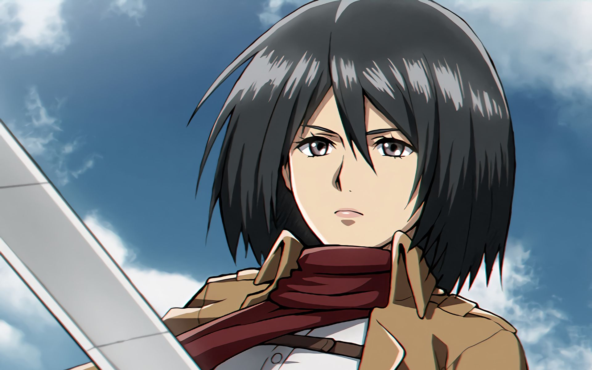

Главные герои
Эрен Йегер
Главный герой истории. Являлся членом Разведкорпуса. Единственный сын Гриши и Карлы Йегер, а также приёмный брат Микасы Аккерман, единокровный брат Зика Йегера, друг детства Армина Арлерта. На данный момент Эрен обладатель сил Титана—Прародителя, Титана Молота Войны и Атакующего Титана.
Микаса Аккерман
Приёмная сестра Эренa и лучшая подруга Армина. Обладает выдающимися физическими способностями. После убийства её биологических родителей похитителями, она была спасена Эреном и стала жить с ним и его родителями, Гришей и Карлой до падения стены Марии. Хотя первоначально Микаса и хотела лишь мирно жить с Эреном, она последовала за ним и вступила в 104-ый кадетский корпус, где она стала лучшей из всех выпускников. Позже она вступила в Разведкорпус, чтобы следить за Эреном и защищать его.

Армин Арлерт
Элитный солдат Разведкорпуса. Друг детства Эрена Йегера и Микасы Аккерман. Хоть Армин и не входит в топ 10 лучших кадетов 104-о кадетского корпуса, его интеллект и стратегический гений делают его одним из самых ценных бойцов Разведкорпуса, особенно, в паре с Ханджи Зое. После Битвы за Шиганшину он получил силу титана и стал колоссальным титаном. На данный момент является командиром разведкорпуса.
Другие герои
Леви Аккерман
Капитан собственного отряда Разведкорпуса и широко известен как «Сильнейший боец человечества».
Эрвин Смит
13-й Главнокомандующий Разведкорпуса. Он рассудительный, умный и уважаемый человек. Несмотря на аналогичную Леви заботу о членах своего отряда, в случае необходимости без колебаний готов пожертвовать ими ради остального человечества. Он также разработал вид военного построения, позволяющего заранее обнаружить находящегося далеко противника. Также на протяжении большой части своей службы в качестве командира отстаивал независимость Разведкорпуса, тем самым спасая его от расформирования.
Ханджи Зоэ
Бывший командир отряда Разведкорпуса, а также главный исследователь. После смерти Эрвина Смита заняла его место и стала 14-ым Главнокомандующим Разведкорпуса.
Подразделения
Разведкорпус
Разведывательный Корпус (調査 兵団 Chōsa Heidan?) — являлся подразделением вооружённых сил Парадиза наиболее активно участвовавшим в непосредственных боях с титанами и в их изучении. Из-за своих постоянных экспедиций солдаты Разведкорпуса являются наиболее опытными в использовании УПМ и противопехотного устройства пространственного маневрирования. Несмотря на небольшой успех в результате их деятельности, члены организации по-прежнему символизировали «надежду человечества», а их знаки отличия были известны как «Крылья Свободы». Цель Разведкорпуса — когда-нибудь изменить мир и вернуть то, что было отобрано у человечества.

Военная полиция
Военная Полиция (憲兵団 Kenpeidan?) – наиболее престижный род войск. Это связано с тем, что их работа позволяет им жить во внутренних стенах, в безопасности. У военной полиции очень много ресурсов, а её власть больше чем у Гарнизона и Разведкорпуса. На самом же деле в военной полиции полное отсутствие надзора и дисциплины, кругом можно увидеть злоупотребление властью, у них плохие отношения с Гарнизоном и практически ненавистные с Разведкорпусом. Только десять лучших курсантов могут попасть в данный род войск, но судя по разговору Бориса и Хитч, есть и другие, нелегальные способы попасть в полицию.
Гарнизон
Гарнизон (駐屯兵団 Chūton Heidan?) – наиболее многочисленный, но при этом и наименее квалифицированный (за исключением элитных отрядов) род войск. В связи с высоким уровнем смертности Разведкорпуса и высоким конкурсом набора в Военную полицию, люди чаще всего предпочитают именно его.

Принадлежность персонажей к подразделениям
| Персонаж | Подразделение | Звание |
|---|---|---|
| Эрен Йегер | Разведкорпус | Солдат |
| Микаса Аккерман | Разведкорпус | Офицер |
| Армин Арлерт | Разведкорпус | Командир |
| Леви Аккерман | Разведкорпус | Капитан |
| Эрвин Смит | Разведкорпус | Бывший командир |
| Ханджи Зоэ | Разведкорпус | Бывший командир |